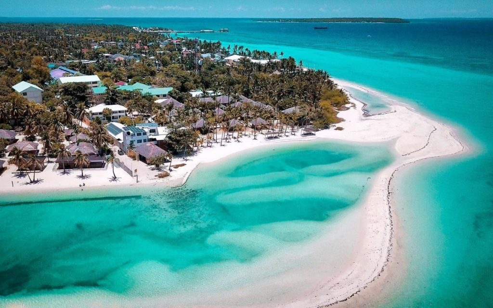
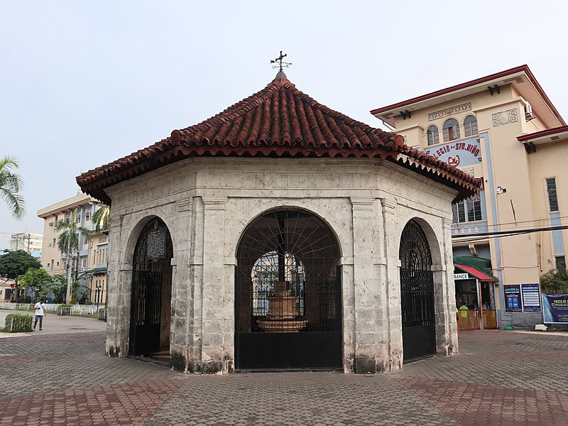
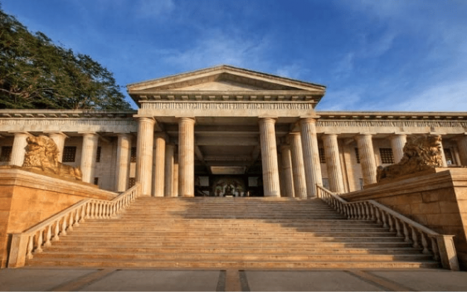

Cebu City
City Information
Cebu City is a first class highly urbanized city in the Central Visayas region of the Philippines. It is the capital of Cebu Province. It also serves as the regional center of Central Visayas and its metropolitan area exerts influence on commerce, trade, industry, education, culture, tourism, and healthcare beyond the region.

Interesting Facts
- Known as the "Queen City of the South"
- The oldest city in the Philippines
- Comprised of more than 150 islands
- Hosts Sinulog Festival, one of Asia's grandest festivals
- World-famous for its lechon, a roasted pig dish
Top Tourist Spots and Attractions
-
Bantayan Island
Located at the northern end of Cebu island is nothing short of a tropical paradise. With white-sand beaches, stunning saltwater lagoons, rock formations, and crystalline turquoise waters, the Bantayan Island truly deserves its moniker "The Boracay of the South". To see it with your own eyes is already a gift, what more if you actually have the chance to enjoy every bit of it? There are countless activities to look forward to during your unforgettable adventure in Bantayan Island such as island hopping, boating, diving, snorkeling, and having a simple romantic dinner under the mesmerizing view of the setting sun. The island is also filled with world-class hotels and resorts to take your vacation to another level!
-
Colon Street
Colon Street is the oldest street in the Philippines. Spanish colonizer Miguel Lopez de Legazpi established the street in 1565. He named the street after Cristopher Columbus who was actually Cristobal Colon. This place is near Cebu ports and is the hub for early commerce. As a result, first establishments of Cebu are in this street. At present, it is still the hotspot for businesses, theaters, pubs, shopping malls, etc. If you wish to buy your “pasalubong”or souvenir, it is in these street where you find stores that sell cheap souvenir items. People commonly celebrate the popular Sinulog Festival in Colon Street.
-
Magellan's Cross
King of Spain Charles 1 chose navigator Ferdinand Magellan to look for the "Spice Islands". In doing so, Magellan was able to cross the globe and eventually landed in the Philippines in 1521. Specifically, he made his step in Cebu on March 15, 1521. Magellan presented Christianity to Cebuanos, and most of them embraced the religion. In this site is where Magellan planted the Cross which symbolizes Christianity on April 21, 1521. An encasement protects the original Magellan's cross.
-
Fort San Pedro
Fort San Pedro is the oldest fort in the Philippines. Spanish leader, General Miguel Lopez de Legazpi commanded the building of this fort. De Legazpi thought to use it against Muslim warriors. However, as time passed by, other colonizers had used it for other reasons. When Americans occupied Cebu, their soldiers used this as their residence. Also, Americans educated Cebuanos in this fort. Further, during the Japanese colonization, Japanese also used the fort as a barrack, a prisoner and a hospital. The historicity of this smallest-oldest fort in the country is undeniable.
-
Temple of Leah
Teodorico Soriano Adarna built this temple in 2012. The temple is a symbol of his undying love for his wife of 53 years, Leah Villa Albino-Adarna. The temple has 24 chambers including a museum, an art gallery and a library. Moreover, this place has Leah’s favorite and personal belongings. In addition, Greek and Roman architectures are the inspiration of the temple. Statues of gigantic lions as well as a grand staircase with brass angels are decors of this Taj Mahal of Cebu.